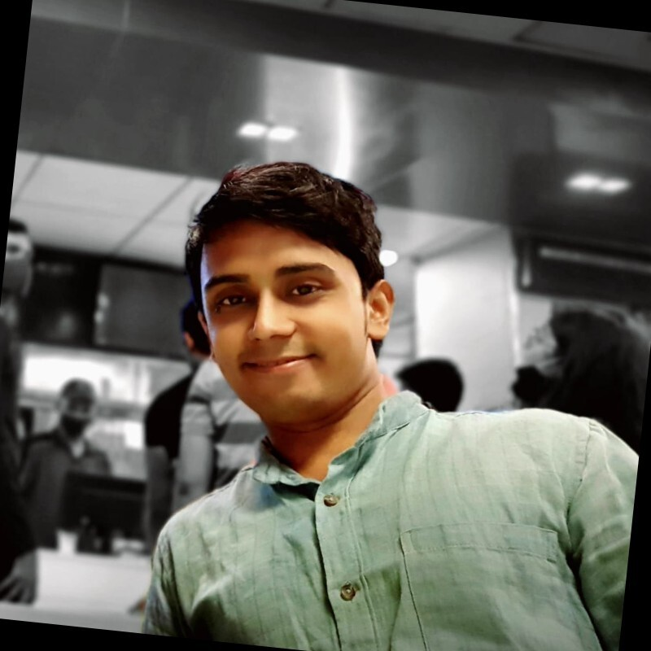

Architecting Civilizational Intelligence through Code.
Moving beyond simple prediction to understand the ecology of human behavior and systemic risk. Merging thick ethnographic description with agent-based modeling.
View Case Studies
Moving beyond simple prediction to understand the ecology of human behavior and systemic risk. Merging thick ethnographic description with agent-based modeling.
View Case Studies
It is not merely data science applied to social data. It is the study of complex adaptive systems.
Where traditional social science isolates variables, CSS models the interaction between agents to reveal emergent phenomena—like how a specific policy triggers a cascade in a supply chain or how information propagates through a polarized network.
We model "agents" based on abstract behavioral principles—bounded rationality, risk aversion, and network effects—but mediated by local context.

"We are not building a conscience. We are building a mirror. A precise, uncomfortable mirror that shows civilization what it is actually doing."
— Santosh Upadhyay